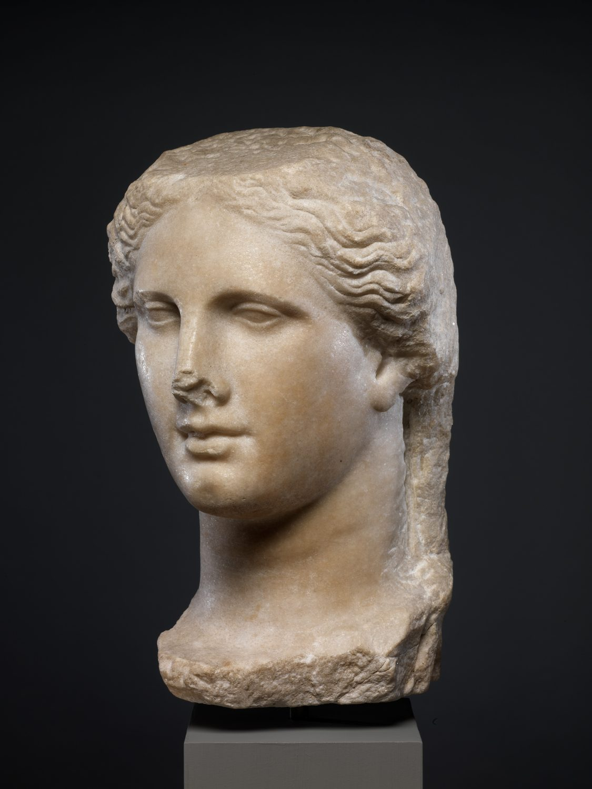
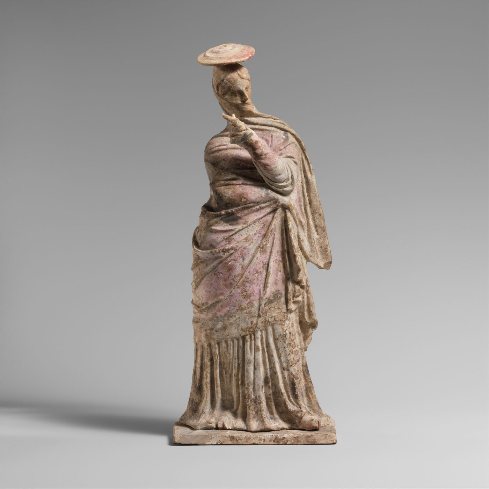

Unit 7 · Women in ancient Greece · Lesson 14
Two women at the festival
Two poems, both by men, put Greek women on the page in Alexandria. What do they show, how far can we trust them, and how do you pace two timed answers by their marks?
Year 11 Ancient History · Present with → or space · Read on a phone with R

Images: The Met (CC0 1.0). Full details on the last slide.
Connect · 3 minutes · books closed · everyone writes one line · press K for the timer
Greek women in Ptolemaic Egypt: what continued, what changed?
Name one thing that continued and one thing that changed for Greek women in Ptolemaic Egypt, with its document.
Cold call two students: what continued, what changed, and which document?
A Greek woman still acted with a guardian: in a loan of 221–220 BCE (Select Papyri I 65) Demetria is the lender, and her guardian Apollophanes is named beside her.
Marriage and money were put in written documents, and some women wrote to the king in their own names: P. Eleph. 1 sets out duties on both sides (311/310 BCE), and Philista, who describes herself as a working woman, petitions about a scalding (P. Enteux. 82, about 221 BCE).
A limit: papyrus survives in Egypt’s dry climate, so a “change” may partly be a change in what survives. Today: poems about Greek women in Alexandria.
Learning intentions and success criteria · 2 minutes
Today’s goals
- analyse attitudes towards women in Alexandrian poetry
- pace source answers by their marks
- explain how Theocritus and Herodas depict women, and why
- judge what a poem is reliable for
- work out minutes per mark and pace my answers
Syllabus outcomes: AH-11-04 accounts for the different perspectives of individuals and groups in their historical context · AH-11-05 analyses different types of sources for evidence to support a historical account or argument · AH-11-07 communicates historical understanding, applying historical knowledge, terms and concepts. Life Skills: AH-LS-07 identifies different perspectives of the past · AH-LS-11 communicates information about the past using historical terms and concepts.
Note-making · the routine for the whole course
How to structure your notes
- 1A new page for each lessonA cue column about a quarter of the page wide; title and date at the top; room for a summary at the bottom.
- 2Listen and look, then writeDon’t copy while a slide is being explained. Phrases, not sentences; a source for every claim.
- 3Write your own notes at each ✎ checkpointThen compare with the model notes, one row at a time. Add what you missed in a second colour.
- 4Write the cue questions afterwardsUse exam verbs: identify, describe, explain. To revise, cover your notes and answer the cues.
- 5Finish with a three-sentence summaryTwo checkpoints today: Idyll 15 · Herodas and the perspectives. Your timed answers go in your answer booklet, not your notes.
Key vocabulary · add to the unit word wall
Words for the poems and for pacing
| Writing terms | Meaning |
|---|---|
| Time by marks | Writing minutes ÷ total marks = minutes per mark. Department advice, not a NESA rule. |
| Reading time | Time before writing: deconstruct each question, read the sources, plan, in your head (in the HSC you may not write or mark the paper). |
| Perspective | The point of view a source presents, shaped by its maker, audience and purpose. |
| Usefulness / reliability | What a source can tell us for a question / how far we can trust it for that question: “reliable for … but not for … because …” |
| Added today | Meaning |
| Literary source | A poem, play or story. It can show what its maker and audience found believable or funny, but it was not written as a record. |
| Content terms | Meaning |
|---|---|
| Alexandria | The Greek city on Egypt’s coast, founded by Alexander the Great, which later became the Ptolemies’ capital. |
| Adonis festival | A festival of Adonis, the young lover of the goddess Aphrodite, whose death women mourned. In Idyll 15 it is held at the palace in Alexandria, and its song celebrates Adonis with Aphrodite before the next day’s mourning. |
| Added today | Meaning |
| Mime | A short scene in verse about everyday people, often comic. Idyll 15 and Herodas’s Mimes are both mimes. |
| Court poet | A poet who wrote under the support of a royal court, and so had reasons to please it. |
| Doric | A group of Greek dialects spoken across much of the Peloponnese and in many Greek colonies. The women of Idyll 15 are proud of speaking it. |
1 · I do · supported reading of Idyll 15 · think aloud: who made it, and for whom?
A poem about a queen’s festival
Who: Theocritus, a Greek poet from Sicily who probably lived in Alexandria for a time.
When: about the 270s BCE (an estimate from the queen the poem names).
What: Idyll 15, a poem in the form of a mime, set in Alexandria. Gorgo and Praxinoa, two Syracusan women, go to a festival of Adonis at the palace of Ptolemy II.
… doth the daughter of Berenice, even Arsinoe, lovely as Helen, cherish Adonis with all things beautiful.
Arsinoe II, Ptolemy II’s wife and sister, is the queen the song names · prose translation · the poem is our evidence for this festival in this lesson
Who made this evidence, and for whom? What does that make us ask? Think first.
- 1A poet’s evidenceThe festival reaches us in a poem by a man, not in a record of the festival. He tells it the way he chooses.
- 2Written for the courtThe song names the queen as the host, and (in the street) a woman thanks the king. A poet who names his rulers like this was probably writing for their court and for Greek readers in Alexandria.
- 3So askWhose view of the women is this? What did the poet want his audience to feel? Keep those two questions for every extract.
1 · I do · supported reading · Praxinoa at home, then in the street
Reading the extracts: who is she talking about?

That’s my lunatic; came and took one at the end of the world, … just to prevent you and me being neighbours, out of sheer spite, the jealous old wretch!
I must say, you’ve done us many a good turn, my good Ptolemy, since your father went to heaven. We have no villains sneaking up to murder us in the streets nowadays in the good old Egyptian style.
trans. J. M. Edmonds, Loeb Classical Library (1912) · “one” = a house; “my lunatic” is her husband, named Dinon a few lines later · Ptolemy = King Ptolemy II; his father, Ptolemy I, was worshipped as a god after his death
| Read for | Answer |
|---|---|
| Who is “my lunatic”? | Praxinoa’s husband: she complains that he took a far-off house “just to prevent you and me being neighbours”. |
| Whom does she address in the street? | King Ptolemy (II), as if he were there: it is a speech for the audience as well as for Gorgo. |
1 · I do · supported reading · a stranger interrupts
Reading the third extract, then thinking aloud
You’re giving your orders to Syracusans. If you must know, we’re Corinthians by extraction, like Bellerophon himself. What we talk’s Peloponnesian. I suppose Dorians may speak Doric, mayn’t they?
trans. J. M. Edmonds, Loeb Classical Library (1912) · Syracusans = people of Syracuse, a Greek city in Sicily · “Corinthians by extraction” = descended from people of Corinth · Bellerophon = a hero of Greek myth · Peloponnesian = from the Peloponnese, the southern part of mainland Greece · Doric = the dialect of Greek they speak
- Who made it? A man, probably a court poet.
- For whom? Probably the palace and Greek readers.
- What do we see? Women crossing the city to a royal festival.
- So I ask, before I judge: whose view of them is this?
Notes checkpoint 1 of 2
Who made Idyll 15, and what do we see?
2 · We do · the Herodas extract · read it aloud, then say who is speaking, to whom, and about what
A go-between talks about Egypt
Ten months have flown since Mandris went away
To Egypt, and no syllable from that day
To this he’s sent you; he’s forgotten you, …
In the land of Egypt: wealth, power, fame, repose,
Gymnasium, gold, young men, philosophers, shows,
The shrine of Brother and Sister, the Good King,
Wine, the Museum, — every pleasant thing
The heart of man can wish for; …
verse translation by Hugo Sharpley, A Realist of the Aegean (1906) · Mandris is Metriche’s husband · the Museum = Alexandria’s centre of learning · “Brother and Sister”: in the Greek, “the Sibling Gods”, Ptolemy II and his sister-wife Arsinoe II, worshipped together (Headlam and Knox, 1922)
Who: Herodas, a Greek poet, probably writing in Alexandria in the 3rd century BCE.
When: probably 270–250 BCE; the date is contested. Sharpley’s heading says “Not earlier than 270 B.C.”
What: a mime, like Idyll 15. Sharpley’s heading for the scene: “Unknown, but very possibly Kos”.
In pairs: who is speaking, to whom, and what is she trying to do?
2 · We do · in pairs · 3 minutes · complete the grid for both poems · rows 1–4 for both, rows 5–7 for Mime 1 only
Two poems, two perspectives on women
Keep the Idyll 15 cells in rows 5–7 for your timed answers: they are today’s two questions. Complete the other cells in your notes, then show the key.
| Ask | Idyll 15 (Theocritus) | Mime 1 (Herodas) |
|---|---|---|
| 1 · Maker and date | A Greek poet from Sicily; about the 270s BCE | A Greek poet; probably 270–250 BCE (contested) |
| 2 · Written for | Probably the court and Greek readers in Alexandria (it names the queen and thanks the king) | Probably readers in Alexandria (an editors’ view, not certain) |
| 3 · Setting and speakers | Alexandria; Gorgo and Praxinoa, two Syracusan women, on the way to a festival at the palace | Scene unknown (Sharpley: “very possibly Kos”); Gyllis, an old go-between, and Metriche, a wife whose husband is in Egypt |
| 4 · Who wrote the women’s words? | A man: the poet | A man: the poet |
| 5 · What the women are shown doing | Question 1: leave for your timed answer | Gyllis presses a lonely wife to take a new friend while her husband is away; Metriche jokes with her at first, then refuses outright and defends her husband |
| 6 · What the poet makes of them | Question 1: leave for your timed answer | A stock comic figure, the old go-between, set against a wife who refuses her |
| 7 · What the poem cannot show | Question 2: leave for your timed answer | What a real wife chose, or how many go-betweens there were: it is a scene, and Egypt’s wealth is a sales pitch |
2 · We do · cold call · 3 minutes · about Mime 1 only
Comedy or record?
Is Mime 1 comedy or record? Say what you would use as evidence for each, and what you would need to see to say “record”.
- Who made it, and for whom? (rows 1–2)
- Whose voice speaks? (row 4)
- What kind of scene is it? (rows 3 and 6)
Pairs argue for 30 seconds, then two cold calls from different camps.
A strong answer weighs both. For comedy: a bawd and a lonely wife are stock figures, and the scene is built to amuse. For record: its Egypt (the Museum, the shrine, the wealth) probably reflects what its readers in Alexandria would recognise. It is not a record of a real wife’s choices, and the praise of Egypt is a go-between’s sales talk. Hold the same question for Idyll 15: it is part of today’s timed questions, so do not answer it yet.
Notes checkpoint 2 of 2
Mime 1, and two poems compared
3 · Writing focus · 7 minutes · I do → We do → apply
Writing focus: time by marks
Minutes per mark = writing minutes ÷ total marks (department advice, not a NESA rule). A sample paper (our own example, not the HSC’s format): 60 marks in 90 minutes = 90 ÷ 60 = 1.5 minutes a mark. So a 3-mark answer gets 3 × 1.5 = 4½ minutes, and a 5-mark answer about 7½. For the new-syllabus HSC paper (first set in 2028 — the one you will sit), NESA says “3 hours plus 10 minutes reading time” and 100 marks: 180 ÷ 100 = 1.8 minutes a mark on average.
How reliable is Herodas, Mime 1, as evidence of Ptolemaic Egypt? 3 marks · 4½ minutes Practice source, from today · written for this lesson: the plan as one sentence; a full answer develops each point
Written by a poet probably for Alexandrian readers, Herodas’s Mime 1 is reliable for how a Greek poet imagined Egypt’s lure, “wealth, power, fame”, but not for what Egypt was really like, because the list is a go-between’s sales talk.
Provenance phrase: who, for whom, what kind
Reliable for what, with a few exact words
But not for what
Because: the reason
Your timed task has 10 marks (4 + 6), so 15 minutes at 1.5 a mark: 6 minutes for Question 1 and 9 for Question 2. The marking and planning minute comes out of Question 1’s 6. Your Writing toolkit (booklet pages 3–4): the modality scale.
Use marks × 1.5. Say your numbers, then check.
- How long for a 3-mark answer?
- How long for an 8-mark answer?
3 marks: 3 × 1.5 = 4½ minutes. 8 marks: 8 × 1.5 = 12 minutes. Ten marks use 15 minutes.
Cold call: what would you do in 4½ minutes for 3 marks?
3 · Writing focus · We do · check your deconstruction · 2 minutes
Today’s two questions: what does each ask you to do?
1 · What attitudes towards women are revealed in Theocritus’s Idyll 15? 4 marks
2 · How reliable is Idyll 15 as evidence of the lives of Greek women in Alexandria? 6 marks
| Step | Question 1 | Question 2 |
|---|---|---|
| Verb | What … revealed: not a glossary word, but a self-explanatory question. It asks what this poem shows (its value for the question), not what all Greeks thought | How reliable … as evidence of: also self-explanatory. It asks you to judge the poem for this question: reliable for what, and not for what |
| Topic | attitudes towards women: how women are shown and regarded, and by whom | the lives of Greek women in Alexandria: what they did and said, not only how a poet pictured them |
| Limits | Idyll 15 only, the extracts on the paper; “revealed” means what the words show, not every poet | Idyll 15 only; Greek women in Alexandria (not Egyptian women, not Athens); judged for this question |
| Do | 4 marks: about four points (department advice), each tied to the poem’s own words | 6 marks: a developed paragraph (department advice): provenance, value, purpose, a judgement of “reliable for … but not for …”, a limit; use the OVPRL routine on page 2 of your booklet |
3 · Timed source questions · reading time · 3 minutes · press K, click 3, then Start · think only: no writing, no marking
Reading time: think now, write later
- 1Deconstruct both questionsDeconstruct each question first: verb · topic · limits · what your answer must do. Say each step in your head.
- 2Read the extracts for their provenanceWho made it, when, where and for whom. Then notice the words that answer each question.
- 3Plan one point per mark (department advice)Four points for the 4-mark question, six for the 6-mark question. Decide the order and your time: 6 minutes, then 9.
NESA’s 2027 HSC student guide says: “You must not write on or mark your exam in any way or use any equipment (including highlighters).” So practise it today: think only. In the first minute of writing time, mark the extracts and jot your plan.
1 · What attitudes towards women are revealed in Theocritus’s Idyll 15? (4 marks)
2 · How reliable is Idyll 15 as evidence of the lives of Greek women in Alexandria? (6 marks)
| Question 1 · 4 marks | |
|---|---|
| Point 1 | |
| Point 2 | |
| Point 3 | |
| Point 4 |
| Question 2 · 6 marks | |
|---|---|
| Origin | Who made it, when, and for whom? |
| Value | What does it show that helps? |
| Purpose | Why was it written? |
| Reliability | Reliable for … but not for … because … |
| Limitations | What can it not show? |
Use the OVPRL routine on page 2 of your booklet.
3 · Timed source questions · the paper · both questions
The paper: Theocritus, Idyll 15
That’s my lunatic; came and took one at the end of the world, … just to prevent you and me being neighbours, out of sheer spite, the jealous old wretch!
I must say, you’ve done us many a good turn, my good Ptolemy, since your father went to heaven. We have no villains sneaking up to murder us in the streets nowadays in the good old Egyptian style.
You’re giving your orders to Syracusans. If you must know, we’re Corinthians by extraction, like Bellerophon himself. What we talk’s Peloponnesian. I suppose Dorians may speak Doric, mayn’t they?
… doth the daughter of Berenice, even Arsinoe, lovely as Helen, cherish Adonis with all things beautiful.
Theocritus, a Greek poet from Sicily who probably lived in Alexandria, wrote Idyll 15, a poem in the form of a mime (a short comic scene), about the 270s BCE. Two Syracusan women living in Alexandria, Gorgo and Praxinoa, go to a festival of Adonis at the palace of King Ptolemy II. Extracts 1–3: trans. J. M. Edmonds (Loeb, 1912); extract 4: trans. A. Lang (1880), who names Arsinoe II, Ptolemy II’s wife and sister, as the queen of the festival. The poem is our evidence for this festival here.
What attitudes towards women are revealed in Theocritus’s Idyll 15?
How reliable is Idyll 15 as evidence of the lives of Greek women in Alexandria?
Words to know: Syracusans = people of Syracuse, a Greek city in Sicily · Doric = a Greek dialect · mime = a short comic scene in verse · stranger = someone the women do not know.
3 · Timed source questions · writing · 15 minutes, then 4 to check · press K, click 20, then Start · answer booklet · paced at 1.5 minutes a mark
Write your two answers
Question 1 · 4 marks · What attitudes towards women are revealed in Theocritus’s Idyll 15?
Question 2 · 6 marks · How reliable is Idyll 15 as evidence of the lives of Greek women in Alexandria?
- In the first minute, mark the extracts and jot your plan: one point per mark (department advice).
- Question 1: use the poem’s own words as evidence for each attitude.
- Question 2: provenance first; then “reliable for … but not for … because …”
- Match each claim to its evidence: probably, suggests, shows.
Analyse what Idyll 15 reveals about Greek identity in Alexandria, and whose: think about the “Egyptian style” jibe and the women’s Dorian pride.
Fill in your planning grid in the first minute. Word bank:
Frames: “The poem shows the women as …, because it says …” · “Idyll 15 is reliable for … but not for … because …” Modality: may · probably · suggests · shows
Time card, example done: a 5-mark answer = 5 × 1.5 = 7½ minutes. Yours: Question 1 = 4 × 1.5 = ___ minutes; Question 2 = 6 × 1.5 = ___ minutes.
- minute 0 → 1Mark the extracts and jot your plan (part of Question 1’s 6 minutes)
- minute 1 → 6Question 1 · 4 marks · 6 minutes in all
- minute 6 → 15Question 2 · 6 marks · about 9 minutes
- time checksI call “6 minutes” and “15 minutes”. At each call, mark in your margin where you have got to.
3 · You do · 4 minutes · after the timer · check your own answers · then mark in another colour
Check your answers against what a strong answer includes
1 Read both answers through, in a different colour. 2 Question 1: underline each attitude and tick the quotation that supports it. 3 Question 2: circle your “reliable for … but not for …” and check the OVPRL order. 4 Add one missing point in the margin.
- Complaining about husbands: the wife calls hers “the jealous old wretch” (8–10), a comic grievance.
- Moving about the city: two women cross a crowded city with their maids to a royal festival.
- Pride in origin: “I suppose Dorians may speak Doric, mayn’t they?” (89–93), a quick answer to a stranger.
- Gratitude to the king: Ptolemy has stopped “villains sneaking up to murder us” (46–48), and crime is presented as “Egyptian”: a Greek prejudice.
- A very strong answer says whose attitudes these are: the poet’s, in the women’s mouths, and mostly comic.
- Origin: Theocritus, a Greek poet from Sicily who probably lived in Alexandria, about the 270s BCE; nothing shows he was at a festival.
- Value: how a poet pictured Greek women in Alexandria: crowds, husbands, Dorian pride, a queen’s festival.
- Purpose: to amuse, and probably to please a court it names and thanks (46–48, 110–111).
- Reliability: reliable for how a court poet pictured Greek women’s talk and outings; not for what real women said or did, because Gorgo and Praxinoa are his characters.
- Limitations: one poem, two characters, one festival, through a man’s eyes. (A very strong answer sets it beside the papyri of Lessons 12–13.)
Check · 5 minutes · pens down · your margin marks show your pacing
Where were you at each time check?
- Look at your margin marks. At the 6-minute call, had you finished Question 1?
- At the 15-minute call, had you finished Question 2?
- Write one change to your pacing for next time.
Cold call two students: where were you at each call, and what will you change?
- 1Question 1 ran overCut a point you cannot tie to the poem’s words; keep the plan to one point per mark.
- 2Question 2 felt rushedMake the marking and planning minute shorter by reading for provenance in reading time.
- 3I finished earlyCheck each claim against its evidence, and add a limit.
- 4I wrote too little for the marksCount the points against the marks: one developed point per mark.
Check · exit ticket · 3 minutes · one sentence · collected
Exit ticket: a 5-mark question
Finish the sentence, with a number and a reason:
“For a 5-mark question I will spend about … minutes because …”
- A number from the rate: about 7–8 minutes at 1.5 minutes a mark (5 × 1.5 = 7½), or about 9 at the new-syllabus HSC paper’s average of 1.8 minutes a mark (3 hours ÷ 100 marks).
- A reason that is the marks: the marks set the time, so a 5-mark answer gets about five points, not a long essay’s time.
Circle the one you are least sure of.
Finish your notes If time · or at home
Summary: three sentences
- Who made Idyll 15 and Mime 1, when, and for whom?
- What is a literary source like these reliable for, and what is it not?
- How does time by marks set the length of your answers?
Theocritus’s Idyll 15 (about the 270s BCE) and Herodas’s Mime 1 (probably 270–250 BCE, contested) are mimes by men, probably written for readers in Alexandria (Idyll 15 probably also for the court), and both show Greek women only as the poets chose to write them. Such a poem is reliable for what a poet imagined and expected his audience to recognise, but not for what real women said or chose, because its women are the poet’s characters. At 1.5 minutes a mark, a 4-mark answer gets about 6 minutes and a 6-mark answer about 9, because the marks set the time.
Practice and review · 1 of 4 · true, false, justify
True or false? Justify your answer
- 1Theocritus and Herodas were women. False — both poems are by men, so the women’s words reach us only as the poets wrote them.
- 2Idyll 15 is an eyewitness report of Arsinoe II’s festival. False — it is a poem in the form of a mime; nothing shows the poet was there. It is a poet’s evidence, written probably for the court.
- 3At 1.5 minutes a mark, a 6-mark answer gets about 9 minutes. True — 6 × 1.5 = 9 (department advice).
- 4A paper of 60 marks in 90 minutes is the format of the HSC paper. False — it is a sample paper used as an example. For the new-syllabus HSC paper (first set in 2028 — the one you will sit), NESA says 100 marks, 3 hours plus 10 minutes reading time.
- 5In HSC reading time you should mark the sources and write your plan. False — it is for thinking: deconstruct, read for provenance, plan. In the HSC you may not write on or mark the paper during reading time.
- 6A poem that is reliable for how a poet imagined Egypt is reliable for what a real wife chose. False — reliability is judged for a question: reliable for … but not for … because …
- 7Herodas’s Mime 1 is certainly dated 270–250 BCE. False — the date is “probably 270–250 BCE” and contested; Sharpley’s heading says “not earlier than 270 B.C.”.
Practice and review · 2 of 4 · time by marks, and a sentence to fix
Work out the time, then fix a sentence
A sample paper has 40 marks in 80 minutes. (a) How many minutes a mark? (b) How long for a 3-mark answer? (c) How long for a 5-mark answer?
(a) 80 ÷ 40 = 2 minutes a mark. (b) 3 × 2 = 6 minutes. (c) 5 × 2 = 10 minutes.
“Herodas proves that Greek wives in Egypt were left alone for years.”
Mime 1 has an old woman tell Metriche that her husband Mandris has been in Egypt for ten months without a word. Rewrite the sentence so that its strength matches what the evidence can show.
Herodas’s Mime 1 suggests that a poet could picture a wife left without word from her husband in Egypt; it cannot show how often this happened to real women.
Practice and review · 3 of 4 · extension · analyse
Greek identity in Alexandria, and whose?
Analyse what Idyll 15 reveals about Greek identity in Alexandria, and whose.
Shape: Judge → Evidence → Analyse → Evaluate → Resolve. NESA: analyse means ‘Identify components and the relationship between them. Draw out and relate implications.’ (Glossary of key words)
If you must know, we’re Corinthians by extraction, like Bellerophon himself. What we talk’s Peloponnesian. I suppose Dorians may speak Doric, mayn’t they?
Idyll 15 shows Greek identity in Alexandria as something its women assert and its poet shapes. A woman answers a stranger who complains of their chatter with “we’re Corinthians by extraction” and “Dorians may speak Doric”, claiming a Dorian, Peloponnesian descent as a Syracusan’s pride; and the other speech thanks King Ptolemy for streets free of villains “in the good old Egyptian style”, which sets Greek order against an Egyptian past. These are the views of a man writing, probably, for a Greek court, so the identity shown is the one a court poet expected Greek readers to recognise, not necessarily what Greek women in Alexandria said of themselves. On balance, the poem reveals a Greek identity built on origin, dialect and loyalty to the king, but it is chiefly the poet’s identity, and the court’s, put into women’s mouths.
Practice and review · 4 of 4 · cover your notes and answer from memory
Quick checks
- Who made Idyll 15, when, and for whom? Theocritus, a Greek poet from Sicily who probably lived in Alexandria, about the 270s BCE; probably for the court (it names Arsinoe II and thanks the king) and Greek readers.
- What do lines 110–111 tell us about the festival, and what is the limit? It names Queen Arsinoe II as the host (Lang’s translation). The limit: the festival reaches us in a poem by a man, so it is a poet’s evidence, probably written for the court.
- Who are Gorgo and Praxinoa? Two Syracusan women living in Alexandria: the poet’s characters in a mime. The poem gives us no way to check them as real individuals.
- Comedy or record: what is Herodas’s Mime 1? Mostly comedy: stock figures in a scene built to amuse. It records, at most, what a poet thought his readers would find believable; not a real wife’s choices.
- How do you work out minutes per mark? Writing minutes ÷ total marks (department advice). On a sample paper of 60 marks in 90 minutes that is 1.5 a mark, so a 4-mark answer gets about 6 minutes.
- What is reading time for? Thinking, not writing: deconstruct each question, read each source for its provenance, and plan one point per mark, in your head (in the HSC you may not write on or mark the paper during reading time).
Sources and credits
Where everything comes from
Theocritus, Idyll 15, lines 8–10, 46–48 and 89–93: trans. J. M. Edmonds, The Greek Bucolic Poets, Loeb Classical Library (London: Heinemann; New York: Putnam, 1912), checked on the Internet Archive scan. Lines 110–111 and the note on the festival: trans. Andrew Lang, Theocritus, Bion and Moschus rendered into English prose (London: Macmillan, 1880), Internet Archive scan. Herodas, Mime 1: trans. Hugo Sharpley, A Realist of the Aegean: being a verse-translation of the Mimes of Herodas (London: David Nutt, 1906), Internet Archive scan (Cornell University Library copy). Short extracts for study; these translations are old and are out of copyright in the United States.
NESA, 2027 Higher School Certificate Rules and Procedures: Student guide, p. 19, “3 Reading time”; NESA, Ancient History HSC examination specifications. Background summaries (not quoted at length): Wikipedia, “Theocritus”, “Herodas”, “Adonia”, “Doric Greek” and “Ptolemy II Philadelphus” (CC BY-SA 4.0). Connect: Lessons 12 and 13 (Select Papyri I 65 and II 269; P. Eleph. 1; Hunt and Edgar, Loeb).
Outcomes and content: NSW Education Standards Authority (NESA), Ancient History 11–12 Syllabus (2024). © NESA. Directive verbs: NESA, Glossary of key words.
- Marble head of a Ptolemaic queen, Greek, about 270–250 BCE (Metropolitan Museum of Art, 2002.66) · Photo: The Metropolitan Museum of Art · CC0 1.0 · source
- Terracotta statuette of a draped woman, Greek, 2nd century BCE (Metropolitan Museum of Art, 30.117) · Photo: The Metropolitan Museum of Art · CC0 1.0 · source
Both images are from the Metropolitan Museum of Art’s Open Access collection (CC0), and were resized for the web.